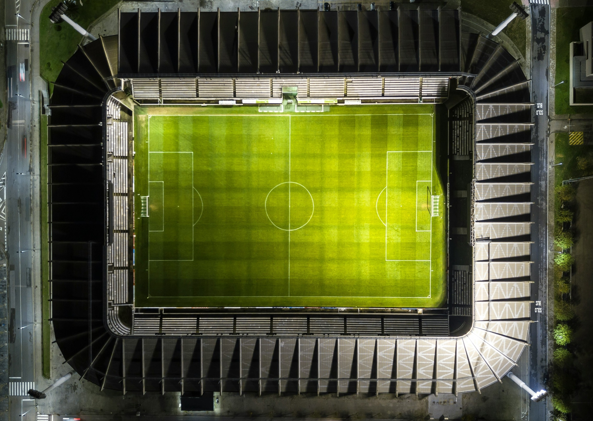

Striker · Project
마인크래프트 온보딩 자동화
- 상황
- 관리자와 뉴비가 스케줄을 맞춰 수동으로 안내를 진행해 이탈률이 높았습니다.
- 행동
- 웹 위키, 디스코드 봇, 플러그인을 연동해 온보딩 전 과정을 자동화했습니다.
- 결과
- 서비스 완성 후 3개월 운영, 약 100명이 이탈 없이 온보딩을 완료했습니다.
— Regista —
관심 있는 것을 분석하고, 직접 만든다.

Striker · Project
Central Midfielder · Method
Full-back · Interest